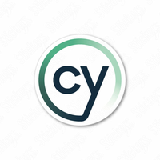
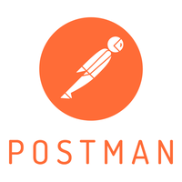
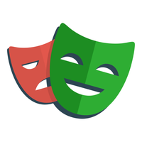

QA que transforma bugs em aprendizado
Baixar CVSobre mim
QA Sênior com trajetória marcada por liderança técnica, excelência em testes automatizados e foco em qualidade ponta a ponta.
- ✔️ Redução de custos operacionais com Cypress Sorry
- ✔️ Implantação do QASE e padronização de processos
- ✔️ Aumento de cobertura em 40% e redução de execução em 25%
- ✔️ Experiência com testes de performance com K6
- ✔️ Gestão de times, análise de requisitos e CI/CD
7+ Anos de experiência • 15+ Projetos entregues
Projetos em Destaque

Testes com Cypress

APIs com Postman
